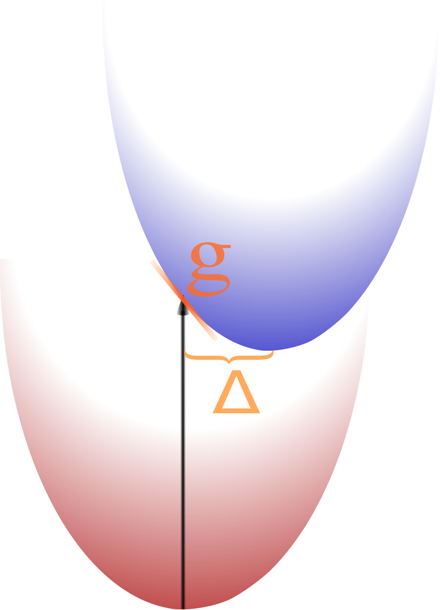

Method for determining the shift
Assuming harmonic approximation, there are two methods for deterining the shift of the two coordinates.

Both methods implemented calculate the Huang-Rhys factors from the shift as
 where
where  is the shift of the modes in normal coordinates.
is the shift of the modes in normal coordinates.
shift
This method needs the two electronic states to be each in their respective equilibrium
geometry and determines the shift by the shift of Cartesian coordinates.
The Cartesian shift is converted into internal coordinates as
 using the L-matrix (whose line-vectors are the eigenvalues of the PES's hessian).
using the L-matrix (whose line-vectors are the eigenvalues of the PES's hessian).
advantages of this method
- Due to the different optimisations of geometries also multiple excited states can be investigated
changed
This method works similar to that shown above but takes explicitly into account
that the frequencies of electronic states don't coincide and hence the overlap is different.
advantages of this method
- more exact results since additional effects are taken into account
- structure of the spectrum can change due to lifted degeneracies
disadvantages of this method
- For larger molecules this method can take longer because the HR-factors are calculated iteratively
- for many (large) systems the frequencies are expected to be very close to each other
gradient
In this method the from the excited state only the gradient of the PES
at the equilibrium geometry of the ground state is known.
advantages of this method:
- Since the geometry is calculated only once, there is no chance of reorienation
of the molecule or false equilibration of the geometry
- The calculations need not that much time since only one geometry-optimisation is needed
Further the comparison of the two methods can be used to estimate if the harmonic approximation is still valid.
Particle-approximations (Franck-Condon scheme)
In the Franck-Condon picture, the intensity is determined by the Franck-Condon
factor which is, besides some factors,
.
Hence the spectrum can be calculated easily from a one-particle spectrum, if one
knows all the intensity, frequency and changing mode for all transitions in one-particle approximation.
The full FC-spectrum can be calculated exactly, if the option to nPA: m
is set with m is not lower than 3*N-6 and the threshold for the HR-factors is set to 0.
Models in the Duschinsky-rotated picture
Taking Duschinsky-rotation into account leads to some problems by applying further
approximations such as the one-particle approximation (OPA); but the full calculation is
not feasible (or at least not wanted) for some molecules.
It turned out that the main problem is that one can not simply assingn the vibrational modes
to each other since the modes in excited state are different from those in ground state
Therefore smallscript has four models with differently strong approximations:
Simple
In this simples model, one simply neglects that the modes do not coincide, but also that
the order of modes may have changed and applies OPA to it.
This can lead to unreasonable results and hence this method should never be used.
Resort
In this model, the modes are sorted such that the modes that are closest to each other will
get the same number and after this OPA is applied.
This leads to results that will look like the Franck-Condon progressions in most cases but only small
corrections on the amplitudes will be found.
Distributing
In this model, besides the resorting of the modes, also OPA-transitions to other modes are allowed.
It is not clear whether this model is valid..?
Unrestricted
Here no one-particle approximation is applied. Instead the number of normal modes taken into
account is truncated as it is done in the Franck-Condon scheme.
As in the Franck-Condon scheme, the modes taken into account explicitly are chosen by the size
of the respecive shift. But for these modes, the sub-system is
calculated in full scheme.